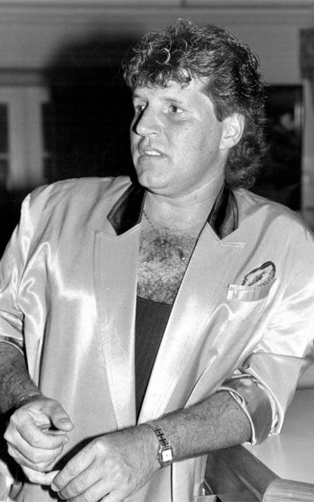

Accueil
Chasse aux épigraphe
Galerie de personnages
Carte
Galerie
Filtrer par type d’indice :
Personnages
Objets
Lieux
Filtrer par secteur d’activité :
Sport et spectacles
Sciences et lettres
Économie et politique
Arts visuels
Edmund Alleyn
Consulter la fiche
Sigismund Mohr
Consulter la fiche
Alfred Pellan
Consulter la fiche
Robert Blatter
Consulter la fiche
Joseph Knight Boswell
Consulter la fiche
Marthe Caillaud
Consulter la fiche
Maurice Pollack
Consulter la fiche
Henriette Belley
Consulter la fiche

Johnny Farago
Consulter la fiche
Camille Henry
Consulter la fiche
Louis Jobin
Consulter la fiche
Philippe-Joseph Aubert de Gaspé
Consulter la fiche